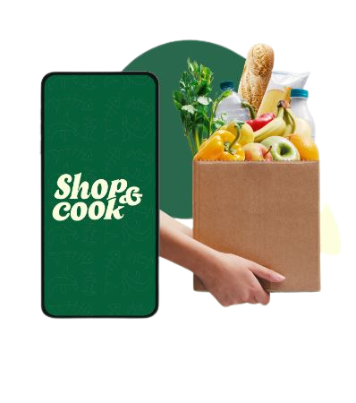

<div class="container mt-5">
    <div class="row presentation-container">
        <div class="col-md-6">
            <p class="description">Le projet consistant en une application visant à
                limiter le gaspillage alimentaire en proposant aux
                utilisateurs une liste de produits à bas prix avec des
                DLC proches disponibles autour de chez eux, c est
                un projet innovant et socialement responsable. Il
                répond à un besoin croissant des consommateurs
                de faire des économies sur leurs courses tout en
                luttant contre le gaspillage alimentaire et pour les
                commerçants de limiter le gaspillages avec les
                invendus.
                Ce projet offrira aux utilisateurs une solution
                pratique pour faire des économies sur leurs courses
                tout en luttant contre le gaspillage alimentaire, en
                offrant aux commerçants une plateforme fiable
                pour vendre leurs produits en fin de consommation.</p>
        </div>
        <div class="col-md-6">
            
        </div>
    </div>
</div>